An immersive journey through 7,787 titles using Natural Language Processing, Clustering Algorithms, and Data Visualization to uncover hidden patterns.
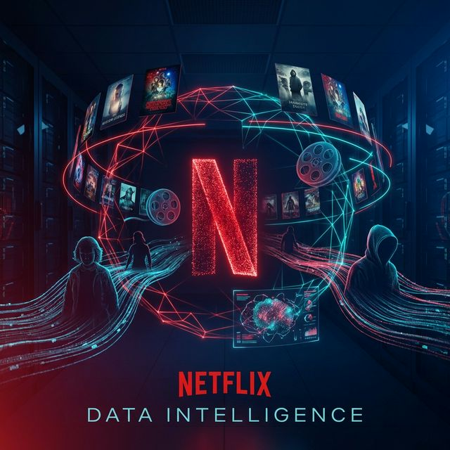
Why content discovery on Netflix needs innovation
With 7,787+ titles on Netflix, users face choice paralysis. Traditional recommendation systems rely on viewing history, but what about new users or exploring new genres?
TF-IDF features extracted from text descriptions, cast, director & genres
variance captured with 500 PCA components (95% needs 3,111 — text is high-dimensional)
NLP on descriptions & metadata
TF-IDF vectorization
K-Means grouping
Similarity-based suggestions
Understanding the Netflix content landscape
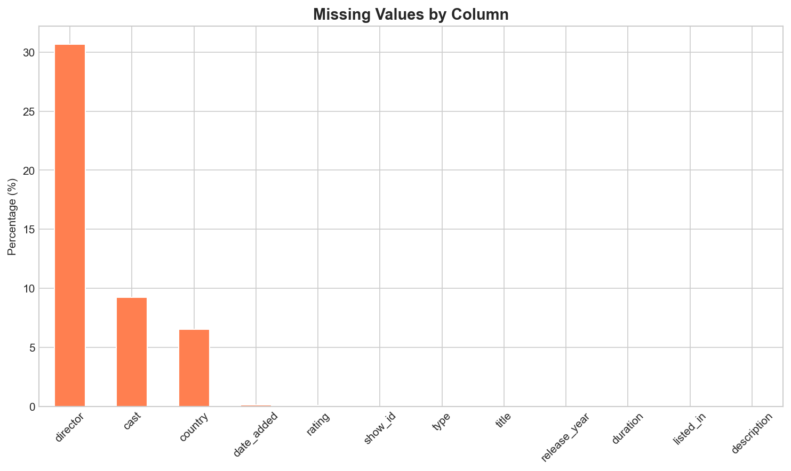
Identifying missing values in the dataset to ensure robust analysis. The director and cast fields have the highest missing rates.
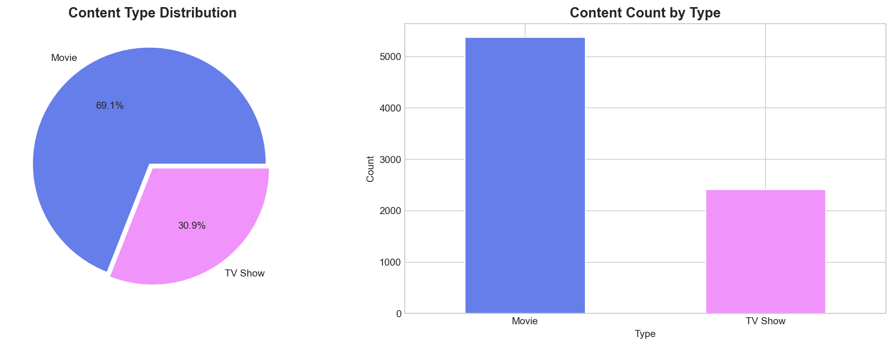
Netflix's catalog is dominated by Movies (69%) compared to TV Shows (31%). This ratio influences content strategy and user preferences.
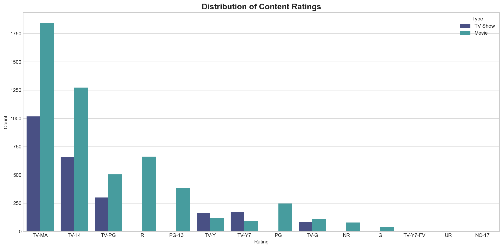
TV-MA (Mature Audience) is the most common rating, followed by TV-14. This indicates Netflix's strong focus on adult-oriented content.
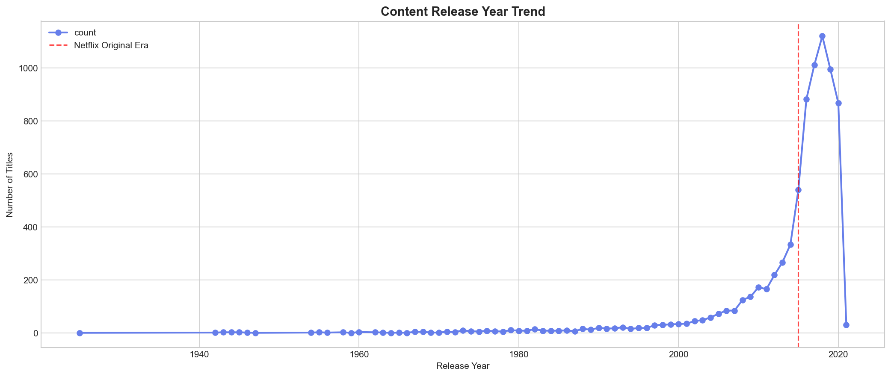
Massive content expansion from 2015 to 2020, with the library growing exponentially as Netflix invested heavily in original content.

While United States leads in content production, India, UK, and other countries contribute significantly to Netflix's global library.
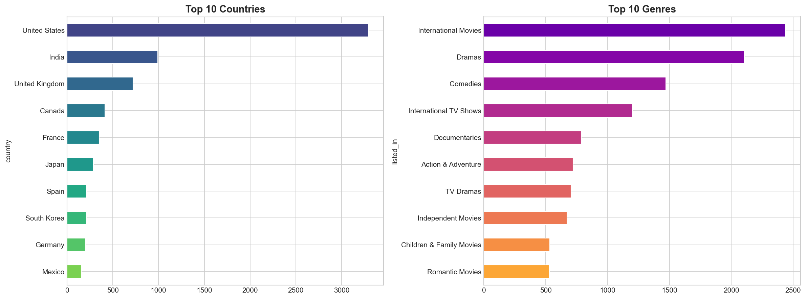
International Movies and Dramas dominate the platform, reflecting Netflix's strategy of acquiring diverse global content.
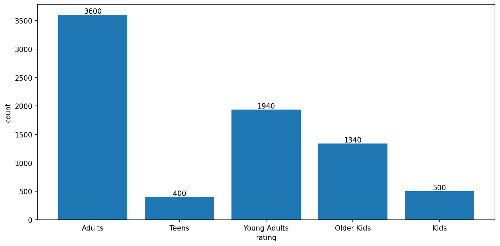
Around 50% of content is produced for adult audiences, followed by young adults, older kids, and kids. Interestingly, Netflix has the least content for teenagers compared to other age groups.
From raw text to intelligent clusters
Combine description, cast, director & genres
Tokenization, Lemmatization, Stop words removal
5,000 features extracted from text
Reduced to 500 principal components
14 optimal content clusters identified
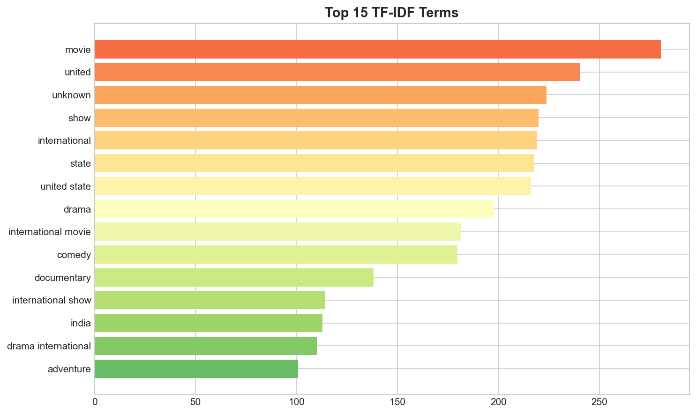
Problem: Raw text (descriptions, genres) cannot be used directly for clustering - machines need numbers.
Solution: TF-IDF converts text to numerical vectors by measuring how important each word is to a document relative to the entire corpus.
Why not just word count? Common words like "the", "movie", "story" would dominate. TF-IDF down-weights frequent terms and highlights unique distinguishing words.
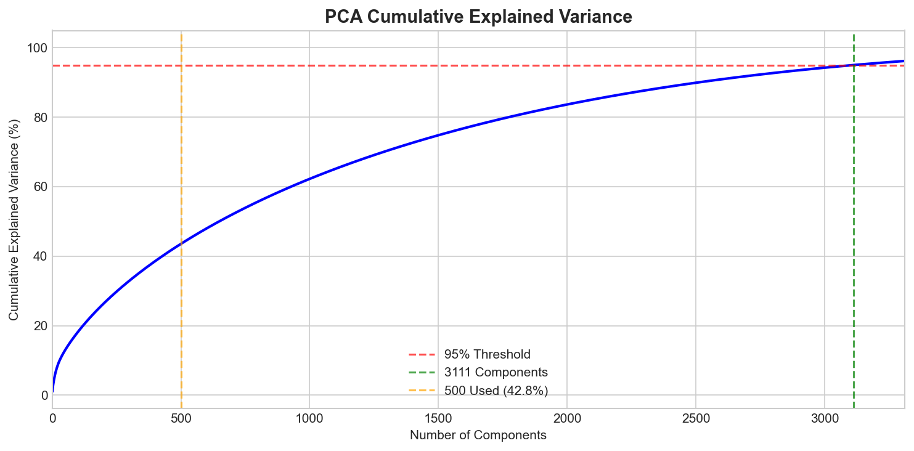
Problem: TF-IDF creates 5,000+ features. High-dimensional data causes the "curse of dimensionality" - distances become meaningless, clustering fails.
Solution: PCA reduces dimensions while preserving key variance. We go from 5,000 → 500 features (42.8% variance — text data is inherently high-dimensional).
Key Insight: The cumulative variance plot shows knee point at ~500 components - beyond this, we get diminishing returns.
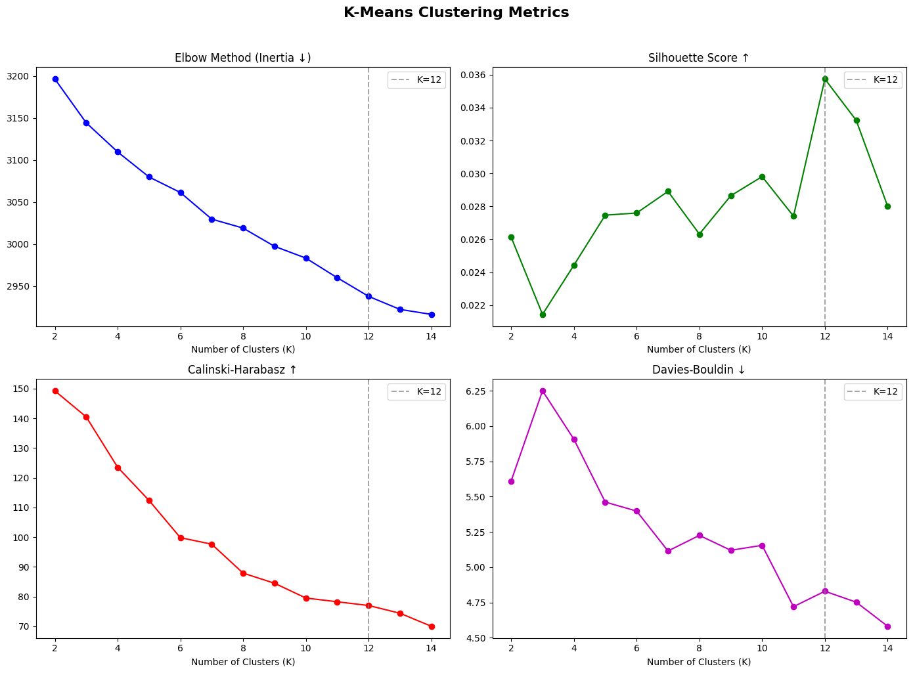
Why K-Means: It's efficient for large datasets, works well with numerical features, and creates compact spherical clusters - ideal for content similarity.
Elbow Method: We plot inertia (within-cluster variance) vs K. The inertia decreases steadily, so we also use Silhouette Score across K=2 to 14.
Silhouette Analysis: K=12 achieved the highest Silhouette Score (0.030), meaning items are most similar to their own cluster vs. neighboring clusters at this K.
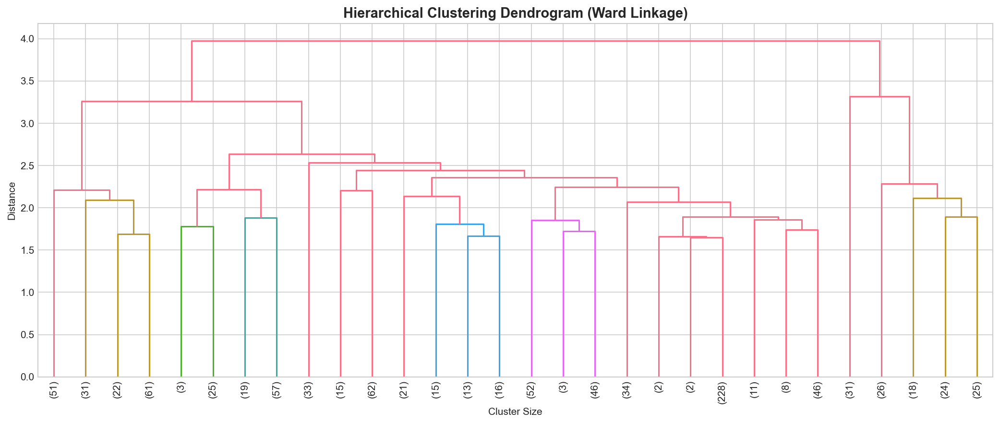
Purpose: Validate our K-Means results using a completely different algorithm (Agglomerative Clustering).
Dendrogram Insight: The tree structure shows natural groupings. We used Agglomerative Clustering with Ward linkage as a validation method against K-Means.
Best Practice: Always validate clustering results with multiple methods to ensure robustness.
12 distinct content clusters emerged from unsupervised learning
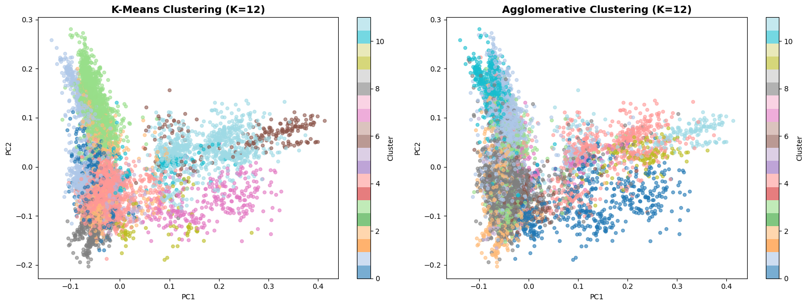
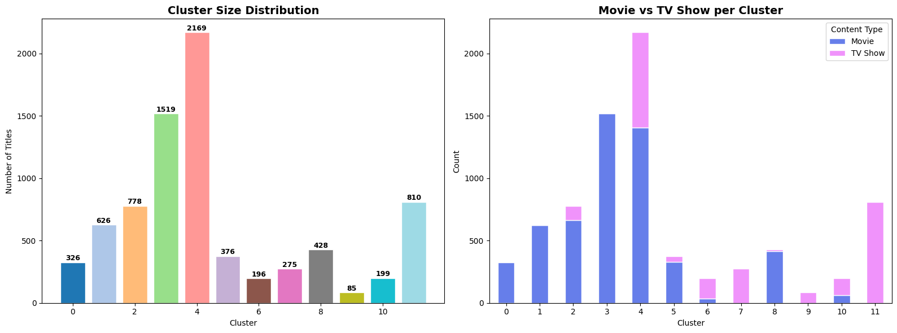
Purpose: Check if clusters are balanced. Highly imbalanced clusters might indicate poor clustering or interesting insights.
What we found: Cluster sizes range from 148 to 1,433 titles, with the largest cluster capturing general dramas and the smallest capturing niche content.
Business Insight: Netflix has diverse content across all categories - good for catering to varied user preferences.
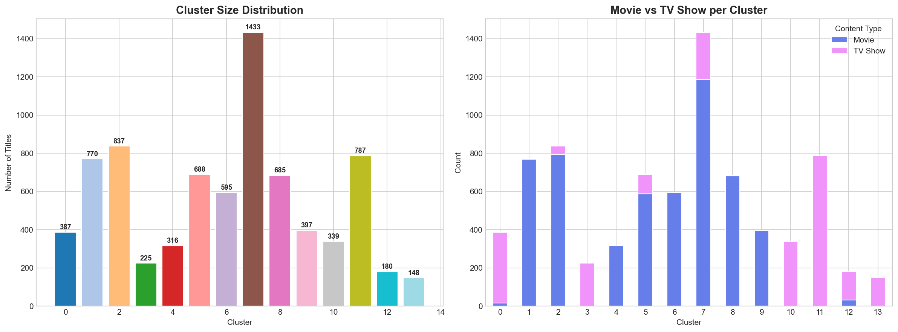
Purpose: Understand WHAT makes each cluster unique - which genres, countries, and content types dominate each cluster.
Validation: If clusters have distinct compositions, it confirms our clustering captured meaningful patterns, not random groupings.
Interpretability: Helps us name and describe clusters meaningfully (e.g., "International Dramas" vs just "Cluster 1").
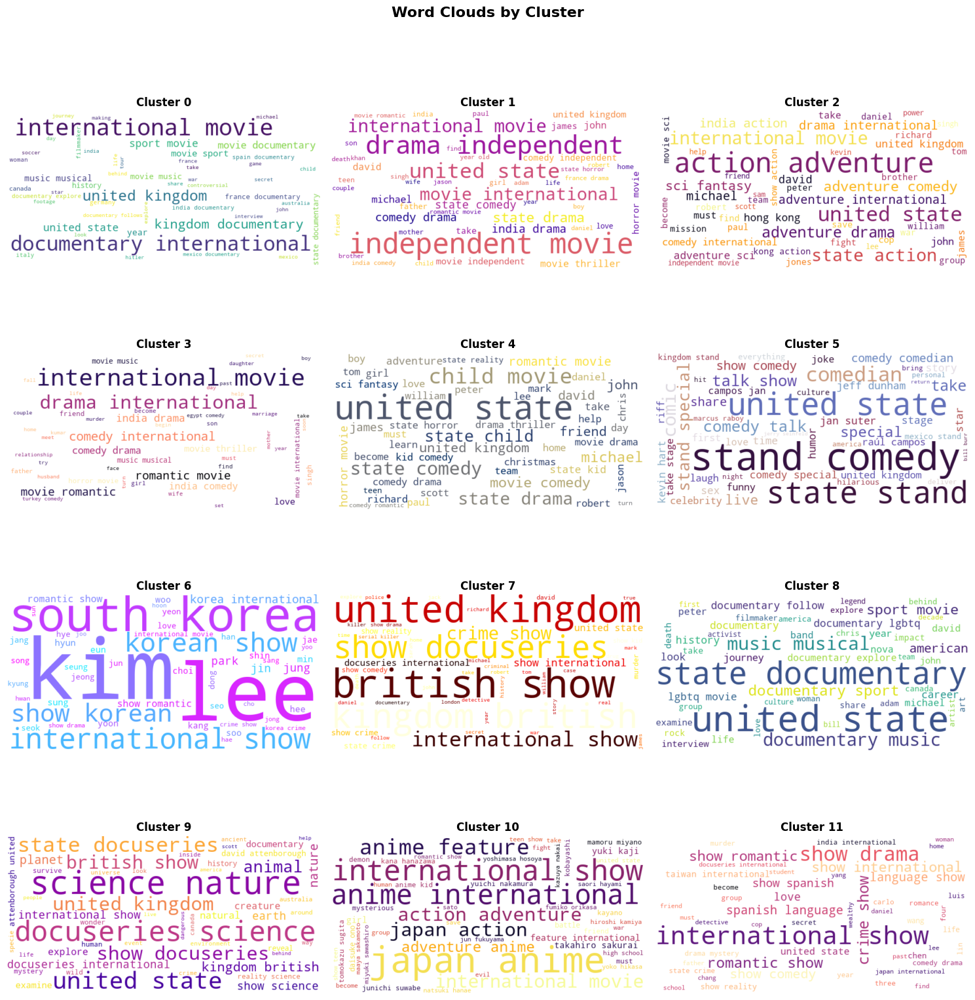
Visual Interpretation: Word clouds show the most frequent/important terms in each cluster at a glance. Larger words = more common in that cluster.
Cluster Validation: If word clouds show distinct themes (e.g., "drama", "romance" in one vs. "crime", "thriller" in another), our clustering successfully grouped similar content.
Communication Tool: Easy to explain cluster themes to non-technical stakeholders - one image tells the story.
Optimal K selected via Silhouette Score
Cluster separation quality (higher = better)
Cluster density (K-Means beat Agglom.)
Cluster overlap — lower is better
Sizes range from 85 to 2,169 titles
Experience the power of content-based recommendations
Our AI analyzes genre, cast, director, and description to find the perfect matches
What this analysis means for Netflix
K-Means outperformed Hierarchical clustering on key metrics: Silhouette (0.030), Calinski-Harabasz (78.78), Davies-Bouldin (4.46)
PCA reduced 5,000 TF-IDF features to 500 components (42.8% variance). Text data is inherently high-dimensional — 95% would need 3,111 components
Cosine similarity on TF-IDF vectors enables recommendations without user history — solving the cold-start problem for new users and newly added content